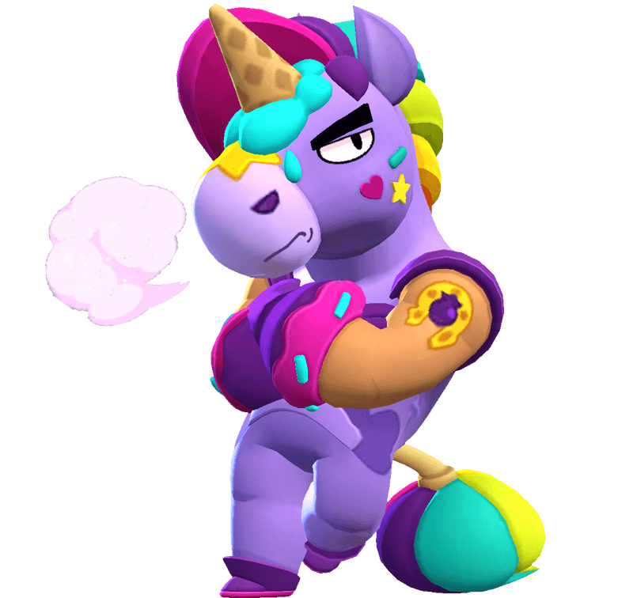

¿Quién es Berry?
Por suerte, este empleado de la tienda de dulces de Mandy es terco como una mula, si no, ya habría dejado el puesto. Parece que odia cada segundo de trabajo, pero, cuando acaba su turno, siempre esboza una sonrisa.
Berry es un Brawler Épico que tiene poca salud, un daño potencialmente alto y puede proporcionar una curación constante para él y sus aliados, a expensas de tener una velocidad de recarga muy lenta. Su atributo también le permite cargar su súper curándose a sí mismo y a sus aliados. Berry ataca lanzando un cono de helado que salpica el suelo y crea un charco de helado derretido en el suelo que dura un período de tiempo, causando daño a los enemigos/aliados curativos salpicados y dentro del charco con el tiempo. Con su súper, se lanza hacia adelante, lo que momentáneamente lo envía a dar vueltas y deja atrás un área de helado derretido en el suelo que se comporta de manera idéntica a su ataque básico.
|  |
NIVEL DE FUERZA 11 |
Sus gadgets
AMIGOS PARA SIEMPRE: Berry sacude la cola, empuja hacia atrás a los enemigos y cura 1000 puntos de salud a los aliados cercanos. |
ADITIVOS SALUDABLES: El área del próximo ataque principal de Berry dura 100% más. |
Sus habilidades estelares
 |
SUELO DE SABORES: La velocidad de recarga de Berry aumenta en un 50% cuando permanece sobre su propio helado derretido. |
 |
DESASTRE ARTITICO: El ataque básico de Berry inflige un 20% de daño adicional cuando impacta en zonas en las que no hay helado. |
 Braian Arancibia
Braian Arancibia Aya El Baarar
Aya El Baarar